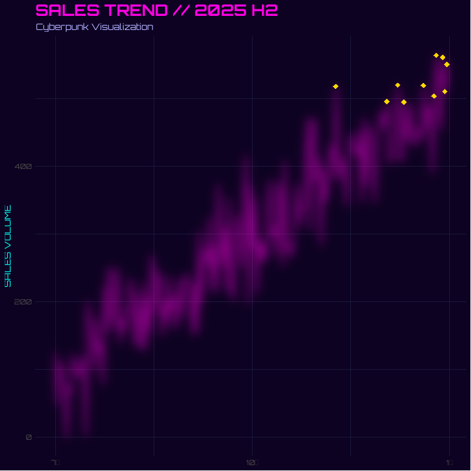

第16章 R 第14节 与大模型交互
前言
R 与大模型的交互方式已相当成熟，形成了从统一接口包、特定提供商客户端到本地模型集成、智能体框架与检索增强生成（RAG） 的完整生态。
核心交互方式概览
| 交互方式 | 代表包 | 核心定位 |
|---|---|---|
| 统一接口 | ellmer、tidyllm、LLMR |
一套代码适配多家模型提供商 |
| 专用客户端 | openai、gemini.R、llm.api |
针对单一提供商的深度集成 |
| 本地模型 | ollamar、rollama、llamaR |
在本地运行开源模型，无需 API 密钥 |
| 智能体/工具调用 | corteza、agenticr、LLMAgentR |
让模型调用 R 函数、执行代码 |
| RAG/嵌入 | ragnar、RAGFlowChainR、ragR |
检索增强生成，结合私有知识库 |
1.统一接口包
统一接口包的核心价值在于将提供商差异封装在配置层，研究代码无需因更换模型而重写。
ellmer（Posit/tidyverse 出品） 是目前最主流的方案，支持 OpenAI、Anthropic Claude、Google Gemini、Azure、AWS Bedrock、Databricks、Snowflake 等众多提供商。使用方式极为简洁。
ellmer 还提供了 live_console() 和 live_browser() 用于交互式对话，以及 chat() 方法用于在脚本中程序化调用。值得留意的是，chat_anthropic() 默认使用 Claude Sonnet 系列模型，该模型在生成 R 代码方面表现突出。
tidyllm 则采用了 tidyverse 风格的“动词 + 提供商”语法。0.3.0 版本后，chat()、embed()、send_batch() 等通用动词取代了旧的提供商专用函数，提供商通过 claude()、openai()、ollama() 等配置函数指定。它支持多模态输入（图片、PDF、音频/视频），并维护结构化的对话历史。
LLMR 面向研究场景，采用单一配置对象（llm_config()）和单一调用函数（call_llm()）的设计。其特点是内置了对结构化输出（JSON Schema） 的一等支持，以及面向多模型实验的并行运行工具 call_llm_par()。
2.特定提供商客户端
当需要深度使用某一提供商的独有功能时，专用客户端更为合适。
openai 是 OpenAI API 的完整 R 封装，覆盖 Chat、Embeddings、Images（DALL-E）、Audio（Whisper/TTS）、Fine-tuning 等全部端点。openaiRtools 则是对 OpenAI Python SDK 的完整移植，API 风格与 Python 版本高度一致。
gemini.R 提供 Google Gemini API 的全面接口，支持 Gemini 的文本生成、多模态理解以及 TTS（语音合成）功能。
llm.api 是一个极简依赖的客户端，仅依赖 curl、jsonlite 和 tinyoauth，支持 OpenAI、Anthropic Claude、Moonshot Kimi、Ollama 以及任何 OpenAI 兼容端点。它的独特之处在于内置了智能体循环（agent loop）和工具调用支持，以及 Model Context Protocol（MCP）客户端。
3.本地模型集成：Ollama 生态
本地运行大模型在数据隐私、成本控制和可复现性方面具有不可替代的优势，尤其适合处理敏感研究数据或需要大规模处理的语料。
ollamar 是连接 R 与 Ollama 服务器的核心包，提供 generate()（单次生成）和 chat()（多轮对话）等函数。使用前需在本地安装 Ollama 并拉取模型（如 ollama pull llama3.1）。硬件上，运行 7B 模型至少需要 8GB 内存，13B 模型需 16GB，33B 模型需 32GB。
rollama 在 ollamar 的基础上增加了完整的模型生命周期管理功能，包括 check_model_installed()、create_model()（从 Modelfile 创建自定义模型）、chat_history() 和 new_chat() 等，适合需要精细控制本地模型行为的场景。
llamaR 则提供了对 llama.cpp 的底层 R 绑定，支持通过 ggmlR 进行 GPU 加速，适合对推理性能有极致要求的用户。
4.智能体与工具调用：让模型操作 R 环境
这是 R 与大模型交互中最具变革性的方向——模型不再只是生成文本，而是可以调用 R 函数、读取会话对象、执行代码并迭代推理。
corteza 将工具直接映射为 R 函数调用，无需 MCP 服务器，并带有溯源追踪机制。它提供三种入口：命令行 CLI、R 控制台的 REPL 循环（chat()），以及面向外部客户端的 MCP 服务器（serve()）。
agenticr 的目标更为直接：让 AI 智能体“住进”R 控制台。用户可以在提示符下混合输入 R 代码、自然语言或斜杠命令。它的一个实用设计是：如果没有配置 API 密钥，会自动通过 Ollama 使用本地的 Qwen3-1.7B 模型，实现零配置启动。
LLMAgentR 提供了基于图的模块化智能体框架，支持构建代码生成、调试、解释和优化等专用 Agent，兼容 OpenAI、Anthropic、Groq 和 Ollama。
llm.api 的 agent() 函数也值得关注：它自动处理工具调用的循环，直到模型返回纯文本响应为止，简化了多轮工具交互的实现。
5.嵌入与 RAG：让模型访问私有知识
嵌入（Embeddings） 是将文本转换为向量表示的过程，是语义搜索和 RAG 的基础。
ragnar（tidyverse 出品） 提供了统一的嵌入接口，支持 embed_openai()、embed_ollama()、embed_bedrock() 等，目标是让 R 用户能够以一致的方式从主流提供商获取嵌入向量。
RAGFlowChainR 构建了完整的 RAG 工作流：使用 DuckDB 作为本地向量存储，支持 HNSW 索引和全文检索，可对接 OpenAI 或 Ollama 兼容的嵌入模型，并集成了可选的 Tavily 网络搜索作为补充检索源。它的设计目标是对标 Python 生态中的 RAGFlowChain，为 R 用户提供生产级的 RAG 管道。
ragR 则更侧重于 RAG 工作流的构建、运行、日志记录和评估，使用本地 RDS 文件作为向量存储，适合需要轻量级、完全本地化方案的场景。
text2vec 是一个历史悠久的文本向量化包，支持 GloVe 词嵌入、LDA/LSA 主题建模等经典方法，适合不依赖外部 API 的纯本地嵌入需求。
一、ellmer 包
ellmer 是 Posit 团队为 R 语言打造的 LLM 统一接口包，它让 R 用户能用一套语法调用十余种大模型，并无缝融入数据分析工作流。
1.核心功能概览
统一的多模型接口：
ellmer通过chat_*()系列函数屏蔽了不同厂商 API 的差异，覆盖 OpenAI、Anthropic Claude、Google Gemini、DeepSeek、Ollama 等主流服务商。切换模型只需更换函数名，代码其余部分几乎不变。流式输出（Streaming）：支持逐字逐句接收回复，在控制台或 Shiny 应用中都能获得类似 ChatGPT 的实时体验。
工具调用（Tool Calling）：通过
tool()函数将任意 R 函数注册为“工具”，LLM 可在对话中自动请求调用，实现查询数据库、执行计算、获取实时信息等操作。结构化数据提取：这是
ellmer最具特色的功能。你只需用type_object()声明期望的数据结构，调用$chat_structured()，LLM 就会直接从非结构化文本中提取信息，并返回 R 中对应的 list 或 data.frame，无需手动解析 JSON。异步与并发：
$chat_async()和$stream_async()返回 Promise 对象，适合批量并行处理大量 LLM 请求，显著提升吞吐效率。生态协同：
ellmer是 Posit AI 工具链的入口，可与vitals（模型评估）、ragnar（RAG）、shinychat（Shiny 聊天应用）、mcptools（MCP 协议）等包配合使用。
2.安装与配置（以DeepSeek为例）
安装（CRAN 正式版）：
install.packages("ellmer")配置 DeepSeek API Key：
因为 API key 很敏感，直接写在 R 脚本里容易泄露。官方推荐将密钥写入 .Renviron 文件，R 启动时会自动加载，ellmer 会自动读取，代码里就不用出现 key。方法如下：
# 如果没安装 usethis
install.packages("usethis")
# 打开 .Renviron 文件
usethis::edit_r_environ()
# 然后在打开的文件里加一行：
DEEPSEEK_API_KEY="你的密钥"
# 保存文件，然后重启 R / RStudio。
# 之后检查：
# Sys.getenv("DEEPSEEK_API_KEY")
# 如果能显示你的 key，就说明设置好了。
# 以后用 ellmer 连接 DeepSeek 时，
# 就不用再手动传密钥，ellmer包会自动读取这个环境变量。3.DeepSeek 接口
chat_deepseek() 构建在 chat_openai_compatible() 之上，默认连接 DeepSeek 官方 API（https://api.deepseek.com）。
library(ellmer)
chat_deepseek(
system_prompt = NULL,
base_url = "https://api.deepseek.com",
api_key = NULL,
credentials = NULL,
model = NULL,
params = NULL,
api_args = list(),
echo = NULL,
api_headers = character()
)
models_deepseek(
base_url = "https://api.deepseek.com",
api_key = NULL,
credentials = NULL
)根据官方文档，chat_deepseek() 目前不支持结构化数据提取（structured data extraction）和图像输入。如果你的任务依赖 $chat_structured() 或 type_object()，需要改用 chat_openai() 或 chat_anthropic() 等支持该功能的模型。
4.应用案例：
以下案例改编自 R 语言博士团队的实战演示，完整展示了 ellmer + DeepSeek 在真实数据分析场景中的用法。用 DeepSeek 生成赛博朋克风格 ggplot2 图表。
场景设定：
你有一份 2025 年下半年的每日销售数据（trend_data），包含 date、sales 和 is_peak（是否高峰日）三列。你希望 AI 生成一张赛博朋克风格的 ggplot2 图表，要求深色背景、霓虹色线条、发光效果和自定义字体。
完整代码：
library(ellmer)
library(tidyverse)
# --- 1. 模拟数据 ---
set.seed(2026)
trend_data <- tibble(
date = seq(as.Date("2025-07-01"), as.Date("2025-12-31"), by = "day")
) |>
mutate(
base_value = seq(100, 500, length.out = n()),
noise = rnorm(n(), 0, 50),
sales = pmax(0, base_value + noise),
is_peak = sales > quantile(sales, 0.95)
)
# --- 2. 创建 DeepSeek 聊天对象 ---
chat <- chat_deepseek(
system_prompt = paste(
"你是一位资深的 R 语言数据可视化专家，精通 tidyverse 和 ggplot2。",
"你擅长创建视觉冲击力强的图表，并严格遵循用户的数据结构和需求。",
"生成的代码必须可以直接运行，不要使用未在用户数据中定义的列名。"
)
)
# --- 3. 构造带有数据上下文的 Prompt ---
prompt <- paste0(
"我有一个名为 `trend_data` 的数据框，包含以下列：\n",
"- date (日期，Date 类型)\n",
"- sales (每日销售额，数值型)\n",
"- is_peak (布尔值，是否为销售高峰日)\n\n",
"数据前 6 行如下：\n",
paste(capture.output(head(trend_data)), collapse = "\n"),
"\n\n请使用 ggplot2 绘制一张赛博朋克(Cyberpunk)风格的销售趋势图。",
"具体要求：\n",
"1. 深色背景（如 #0D0221 或类似深色）\n",
"2. 使用霓虹色（青蓝、品红、亮紫）作为线条和标注颜色\n",
"3. 高峰日用醒目的标记高亮\n",
"4. 添加发光效果（使用 ggfx 包或阴影模拟）\n",
"5. 标题和轴标签使用科技感字体（如 Orbitron，若不可用则用无衬线字体）\n",
"6. 输出完整的 R 代码，包含必要的 library() 调用。"
)
# --- 4. 发送请求，获取生成的代码 ---
response <- chat$chat(prompt)
cat(response)
提示词设计：
System Prompt 的角色约束：在
chat_deepseek()中通过system_prompt限定 AI 的角色（“R 可视化专家”）和行为准则（“代码可直接运行”“不捏造列名”），这能显著减少幻觉代码。数据上下文注入：将
head(trend_data)的实际输出嵌入 Prompt，让模型“看到”真实的数据结构（列名、类型、样例值），而不是凭空猜测。这是减少列名错误的关键技巧。Prompt 工程与视觉规格的精确描述：把“赛博朋克风格”拆解为可执行的具体要求（背景色代码、配色方案、发光效果实现方式、字体名称），让模型有明确的施工图纸。
模型输出：
DeepSeek 会返回类似下面的代码（经过整理）。模型会根据实际数据分布自动调整坐标轴范围、高峰点位置和标注细节，你只需将返回的代码粘贴到 R 脚本中运行即可。
library(ggplot2)
library(ggfx) # 用于发光效果
library(showtext)
# 加载字体
font_add_google("Orbitron", "orbitron")
showtext_auto()
ggplot(trend_data, aes(x = date, y = sales)) +
as_reference(
geom_line(color = "#00FFF7", linewidth = 0.8),
id = "line"
) +
with_blur(
geom_line(color = "#FF00E4", linewidth = 1.2, alpha = 0.6),
sigma = 8
) +
geom_point(
data = filter(trend_data, is_peak),
color = "#FFD700", size = 3, shape = 18
) +
scale_color_manual(values = c("FALSE" = "#00FFF7", "TRUE" = "#FFD700")) +
labs(
title = "SALES TREND // 2025 H2",
subtitle = "Cyberpunk Visualization",
x = NULL, y = "SALES VOLUME"
) +
theme_minimal(base_family = "orbitron") +
theme(
plot.background = element_rect(fill = "#0D0221", color = NA),
panel.background = element_rect(fill = "#0D0221", color = NA),
panel.grid = element_line(color = "#1A1A3E", linewidth = 0.2),
text = element_text(color = "#00FFF7"),
plot.title = element_text(color = "#FF00E4", size = 20, face = "bold"),
plot.subtitle = element_text(color = "#B0B0FF", size = 11)
)5.小结
ellmer + DeepSeek 的组合在 代码生成与数据分析辅助场景中性价比极高：DeepSeek 的 API 价格远低于主流商业模型，而 ellmer 的统一接口让整个工作流保持简洁。需要注意的是，由于 chat_deepseek() 当前不支持结构化数据提取，若你的任务涉及从文档中批量抽取字段并返回 data.frame，建议将模型切换为 chat_openai() 或 chat_anthropic()，其余 API 用法完全一致。
二、直接通过 HTTP 调用 LLM API
当现有 R 包没有覆盖某个端点（如智谱大模型GLM系列），或者你需要更精细地控制请求头、认证方式、超时、重试、流式响应时，可以直接构造 HTTP 请求调用 LLM API。核心流程仍然是：
构造请求 → 添加认证头 → 设置请求体（通常是 JSON）→ 发送 POST 请求 → 解析响应
对此 R 中可用的三种方式是：
- httr2：现代、管道友好，推荐首选；
- httr：经典稳定，很多旧代码仍在使用；
- curl：最底层，适合需要完全控制 HTTP 行为的场景。
1.httr2：推荐方式
library(httr2)
library(jsonlite)
req <- request("https://open.bigmodel.cn/api/paas/v4/chat/completions") |>
req_headers(
Authorization = paste("Bearer", YOUR_API_KEY),
`Content-Type` = "application/json"
) |>
req_body_json(list(
model = "glm-5.3",
temperature=0.5,
messages = list(
list(role = "user", content = "用R写一个线性回归的示例")
)
))
resp <- req_perform(req)
result <- resp_body_json(resp)
cat(result$choices[[1]]$message$content)说明：
request()创建请求对象；req_headers()添加认证头和内容类型；req_body_json()自动把 R 列表转成 JSON，并默认设置Content-Type: application/json，也会自动处理标量unbox；req_perform()发送请求；resp_body_json()把响应体解析为 R 列表。
2. 更稳健的版本
生产环境中不要只写最小示例，建议至少加上超时、重试和状态码检查。
library(httr2)
library(jsonlite)
req <- request("https://open.bigmodel.cn/api/paas/v4/chat/completions") |>
req_headers(
Authorization = paste("Bearer", YOUR_API_KEY)
) |>
req_body_json(list(
model = "glm-5.3",
temperature=0.5,
messages = list(
list(role = "system", content = "你是一个严谨但简洁的 R 助手。"),
list(role = "user", content = "用R写一个线性回归的示例")
),
temperature = 0.2,
max_tokens = 800
)) |>
req_timeout(60) |>
req_retry(
max_tries = 3,
is_transient = function(resp) {
resp_status(resp) %in% c(429, 500, 502, 503, 504)
}
) |>
req_error(is_error = function(resp) FALSE)
resp <- req_perform(req)
if (resp_status(resp) >= 400) {
cat("请求失败，HTTP 状态码：", resp_status(resp), "\n")
cat(resp_body_string(resp), "\n")
} else {
result <- resp_body_json(resp, simplifyVector = FALSE)
cat(result$choices[[1]]$message$content)
}这里的关键点：
req_timeout(60)：设置 60 秒超时；req_retry()：对限流和临时服务器错误进行重试；req_error(is_error = function(resp) FALSE)：不让 httr2 自动抛错，方便手动检查状态码和错误体；simplifyVector = FALSE：保持嵌套 JSON 的列表结构，便于按字段访问。
3. 多轮对话
LLM API 通常通过 messages 数组维护上下文：
messages <- list(
list(role = "system", content = "你是一个 R 语言专家。"),
list(role = "user", content = "什么是线性回归？"),
list(role = "assistant", content = "线性回归是……"),
list(role = "user", content = "请给出一个 R 示例。")
)
req <- request("https://open.bigmodel.cn/api/paas/v4/chat/completions") |>
req_headers(Authorization = paste("Bearer", YOUR_API_KEY)) |>
req_body_json(list(
model = "glm-5.3",
messages = messages,
temperature = 0.3
))
resp <- req_perform(req)
result <- resp_body_json(resp)
cat(result$choices[[1]]$message$content)4. 调试请求
req |> req_dry_run()
req |> req_verbose() |> req_perform()也可以检查最后一次请求和响应：
httr2::last_request()
httr2::last_response()查看响应状态和头：
resp_status(resp)
resp_headers(resp)
resp_body_string(resp)5.httr：经典方式
如果你维护旧代码，或者依赖 httr 生态，可以这样写：
library(httr)
library(jsonlite)
body <- list(
model = "glm-5.3",
messages = list(
list(role = "user", content = "用R写一个线性回归的示例")
)
)
resp <- POST(
url = "https://open.bigmodel.cn/api/paas/v4/chat/completions",
add_headers(
Authorization = paste("Bearer", YOUR_API_KEY)
),
content_type_json(),
body = toJSON(body, auto_unbox = TRUE),
encode = "raw"
)
if (status_code(resp) >= 400) {
stop(content(resp, "text", encoding = "UTF-8"))
}
txt <- content(resp, "text", encoding = "UTF-8")
result <- fromJSON(txt, simplifyVector = FALSE)
cat(result$choices[[1]]$message$content)要点：
toJSON(..., auto_unbox = TRUE)很重要，否则单个字符串可能被编码成数组；content_type_json()设置Content-Type；encode = "raw"表示请求体已经是 JSON 字符串；status_code()检查 HTTP 状态码。
6.curl：最底层方式
当需要完全控制 HTTP 行为时，可以使用 curl 包：
library(curl)
library(jsonlite)
h <- new_handle()
handle_setheaders(
h,
"Authorization" = paste("Bearer", YOUR_API_KEY),
"Content-Type" = "application/json"
)
body <- toJSON(list(
model = "glm-5.3",
messages = list(
list(role = "user", content = "用R写一个线性回归的示例")
)
), auto_unbox = TRUE)
handle_setopt(h, postfields = body)
con <- curl("https://open.bigmodel.cn/api/paas/v4/chat/completions", handle = h)
txt <- paste(readLines(con, warn = FALSE), collapse = "\n")
close(con)
result <- fromJSON(txt, simplifyVector = FALSE)
cat(result$choices[[1]]$message$content)这种方式适合：
- 自定义端点；
- 非标准认证；
- 调试代理、TLS、HTTP 版本；
- 需要精确控制底层连接行为。
7.非标准端点与认证
不同厂商的 API 并不完全兼容 OpenAI。例如 Anthropic Claude 使用 x-api-key 和 anthropic-version，端点和请求体也不同：
library(httr2)
req <- request("https://api.anthropic.com/v1/messages") |>
req_headers(
`x-api-key` = Sys.getenv("ANTHROPIC_API_KEY"),
`anthropic-version` = "2023-06-01",
`content-type` = "application/json"
) |>
req_body_json(list(
model = "claude-3-5-sonnet-latest",
max_tokens = 1024,
messages = list(
list(role = "user", content = "用R写一个线性回归的示例")
)
))
resp <- req_perform(req)
result <- resp_body_json(resp, simplifyVector = FALSE)
cat(result$content[[1]]$text)很多本地推理服务提供 OpenAI 兼容端点，例如 Ollama、vLLM、LM Studio、LocalAI 等。此时通常只需要改 base_url。以本地部署的Ollama为例：
library(httr2)
library(jsonlite)
base_url <- Sys.getenv("OPENAI_BASE_URL", "http://localhost:11434")
model <- Sys.getenv("OPENAI_MODEL", "deepseek-r1:8b")
req <- request(base_url) |>
req_url_path_append("v1", "chat", "completions") |> # 拼出 /v1/chat/completions
req_method("POST") |> # 指定 POST
req_body_json(list(
model = model,
messages = list(
list(role = "user", content = "你好，请介绍一下你自己。")
)
))
resp <- req_perform(req)
result <- resp_body_json(resp, simplifyVector = FALSE)
cat(result$choices[[1]]$message$content)如果本地服务不需要认证，可以不加 Authorization 头；如果需要，则按服务要求添加。
8.常见问题与最佳实践
密钥不要硬编码，使用环境变量或
.Renviron。优先使用 httr2。httr2 的管道风格、重试、错误处理和流式支持更现代。httr 适合旧代码，curl 适合底层调试。
检查 HTTP 状态码。每次请求不一定成功，400、401、403、429、500 都应有不同处理。
设置超时和重试：LLM 网络请求可能较慢，加入
req_timeout(60)和req_retry(max_tries = 3)更稳健。注意 JSON 编码。使用 httr2 的
req_body_json()通常不需要手动auto_unbox。使用 httr 或 curl 时，记得：jsonlite::toJSON(x, auto_unbox = TRUE)处理限流：遇到 429 时，可以读取
Retry-After响应头，或者使用指数退避。不要泄露密钥：调试时避免打印完整请求头。
req_dry_run()会尽量隐藏敏感信息，但仍需谨慎。代理与网络环境：可以通过
req_proxy()或环境变量设置代理：req |> req_proxy("http://proxy.example.com", 8080)成本与输出长度控制：设置
max_tokens、temperature等参数，避免意外消耗。生产环境建议封装：把 base URL、模型名、认证方式、超时、重试、错误解析封装成函数，避免每次重复写请求代码。
总之，直接通过 HTTP 调用 LLM API 的最大优势是灵活：你可以访问任何端点、使用任何认证方式、调试任何请求细节。
三、Ollama
Ollama 是一款开源的本地大语言模型（LLM）运行平台，它的核心目标是让大模型像 Docker 容器一样，可以在个人电脑上一键下载、运行和管理。它极大地降低了本地运行大模型的门槛，让你无需依赖云端 API，即可在本地离线使用 DeepSeek、Qwen、Llama 等上百个开源模型。
1.核心优势
Ollama 解决了传统云端 AI 服务的几大痛点，为用户提供了更灵活、自主的 AI 使用方式。
- 完全免费与开源：Ollama 本身及其支持的模型均免费，采用 MIT 许可证，你可以无限制地使用，无需支付任何 API 调用费用。
- 数据隐私与安全：所有数据处理都在本地完成，输入和输出不会离开你的设备，从根本上杜绝了数据被第三方收集或滥用的风险，尤其适合处理敏感信息。
- 离线可用与灵活部署：模型下载后，可在无网络环境下运行。你还可以将 Ollama 安装在局域网内的服务器上，实现多设备共享使用，甚至能在树莓派等低功耗设备上运行。
- 丰富的模型库与灵活切换：支持超过 150 个开源模型，包括 Llama、DeepSeek、Qwen、Mistral、Gemma 等，你可以根据需求轻松切换不同模型。
2.模型库
Ollama 通过 ollama.com/library 维护一个经过本地推理优化的模型库，覆盖主流开源模型家族：
| 模型家族 | 代表模型 | 特点 |
|---|---|---|
| Llama | Llama 2 / 3 / 3.1 / 3.2 / 4 | Meta 的通用模型系列 |
| Gemma | Gemma 1 / 2 / 3 | Google 的高效语言模型 |
| Qwen | Qwen 2 / 3 / 2.5-VL / 3-VL | 阿里巴巴的模型家族，含多模态变体 |
| Mistral | Mistral 1/2/3、Mixtral | Mistral AI 的模型 |
| DeepSeek | DeepSeek v3.1、R1 | 推理模型 |
| Phi | Phi 系列 | 微软的小型语言模型 |
| CodeLlama | — | 代码生成专用 |
模型命名遵循结构化格式：[host/][namespace/]model[:tag]，例如 registry.ollama.ai/library/llama3:8b。
标签（tag） 用于标识模型版本、参数量或量化级别（如 7b、q4_0、q8_0），q4_0 比 q8_0 节省约 50% 显存。
3.工具链与框架集成
Ollama 生态最显著的特征是与主流 AI 应用框架的深度互操作。
LangChain 集成：langchain-ollama（Python）和 @langchain/ollama（JS）是两个官方维护的集成包。以 JS 版本为例，实例化 ChatOllama 时指定模型名称即可直接调用本地模型，默认连接 http://localhost:11434。Python 侧则可以通过 langchain_community.llms.Ollama 或使用 OpenAI 兼容协议接入。
MCP（Model Context Protocol）支持：Ollama 与 MCP 的结合使本地模型能够调用外部工具。社区已有多个 MCP 服务器实现，支持 GitHub API 集成、浏览器自动化、多智能体端点等功能。例如，一个 GitHub Bot 可以接收 PR 变更，将 diff 发送给本地 Ollama 模型进行审查，再把评审结果作为评论发回仓库。
RAG 与向量数据库：Ollama 常作为 RAG 系统的生成端，配合 Qdrant、ChromaDB、FAISS 等向量数据库使用。典型流程包括：使用 nomic-embed-text 等嵌入模型生成向量→存入向量数据库→检索时由 Ollama 接收检索到的上下文并生成回答。
4.技术架构
Ollama 采用了经典的 Client-Server（客户端-服务器）架构，通过模块化设计将复杂性封装在底层。
- 核心组件：其架构自下而上可分为三层：
- 推理引擎层：底层依赖
llama.cpp，这是一个用 C/C++ 编写的高性能推理引擎，负责最繁重的模型加载和矩阵计算工作。 - 服务层：Ollama 服务器通过 HTTP 协议与客户端通信，并对外提供 OpenAI 兼容的 API 接口，这意味着大量现有的 AI 应用和工具可以无缝对接 Ollama。
- 客户端层：用户通过命令行（CLI）或桌面应用与 Ollama 交互，发起模型加载、对话等请求。
- 推理引擎层：底层依赖
- 关键技术：量化（Quantization）：Ollama 默认拉取的是 Q4_K_M 量化版模型。通过将模型权重从 16-bit 压缩到约 4-bit，可将模型体积缩小至原大小的 1/3，从而让 14B 参数的大模型能够在仅 32GB 内存的家用电脑上流畅运行。
5.官方接口与 SDK
Ollama 提供三个层级的接入方式，覆盖从快速调试到深度集成的全部需求：
REST API：服务默认监听 127.0.0.1:11434，通过 curl 即可直接调用，无需额外依赖。
官方 Python / JavaScript SDK：处理认证、流式传输、错误处理和类型安全接口。Python 库提供 generate 和 chat 两种调用模式，支持上下文管理（通过 context 参数保持多轮对话）和请求取消。JavaScript 库同时支持 Node.js 和浏览器环境，内置完整的 TypeScript 类型定义。
OpenAI API 兼容层：Ollama 提供了 /v1/chat/completions 兼容端点，现有基于 OpenAI 的应用只需将 base_url 指向 http://localhost:11434/v1/，api_key 填入任意占位值即可无缝迁移。
此外，社区维护的 SDK 覆盖了 .NET、Java 等语言，例如基于 OpenAPI 规范自动生成的 C# SDK 支持全部 Ollama API 端点。
6.核心功能
Ollama 提供了一套完整的工具链，方便你管理和定制模型。
简化的模型管理：通过简单的命令即可完成模型的拉取、运行、查看和删除。
# 下载并运行一个模型 ollama run qwen2.5:7b # 查看本地已下载的模型列表 ollama list # 删除一个模型 ollama rm qwen2.5:7b强大的 Modelfile 定制：
Modelfile是 Ollama 的“蓝图”，允许你创建和分享自定义模型。你可以通过它设置系统提示词（System Prompt）、调整运行参数（如温度、top_p），甚至导入 GGUF 或 Safetensors 格式的自定义模型。多语言 API 与生态集成：除了 REST API，Ollama 还提供了 Python 和 JavaScript 库。其 OpenAI 兼容接口（
/v1/chat/completions）让你可以直接使用 OpenAI 的 SDK 来调用本地模型，只需将base_url指向 http://localhost:11434/v1/chat/completions 即可。
7.硬件要求与安装
Ollama 支持 macOS、Windows 和 Linux 三大平台，安装过程非常简单，通常只需下载安装包并一路“下一步”即可。
- 最低配置（可运行 7B 模型）：4 核 CPU + 8GB 内存。
- 推荐配置（流畅运行 13B+ 模型）：8 核 CPU + 16GB 内存 + NVIDIA 显卡（支持 CUDA）。
- GPU 支持：Ollama 支持计算能力 5.0+ 的 NVIDIA GPU（驱动版本 531+），以及通过 ROCm 库支持的 AMD GPU。在 Apple Silicon Mac 上，它还能利用 MLX 框架进行加速。
8.安全注意事项
Ollama 默认配置存在未授权访问风险：服务默认暴露 RESTful API 端口 11434，缺乏内置身份验证。2025 年 3 月，国家网络安全通报中心曾就此发出通报。
社区和官方建议的加固措施包括：保持服务绑定在 127.0.0.1、通过 Caddy 反向代理添加 HTTP Basic Auth、启用 TLS 加密 API 通信、以及通过 OAuth2.0 实现基于角色的访问控制。Ollama 社区也在推动“Secure Mode”特性，计划通过 --secure 标志切换至加固默认配置，包括内置认证和启动时的安全警告。
默认情况下，Ollama 服务仅绑定到本地 127.0.0.1，是安全的。 但许多教程会指导用户设置 OLLAMA_HOST=0.0.0.0 以便局域网访问，这会使服务暴露在网络上且没有任何鉴权机制，存在未授权访问的风险。
如需远程访问，务必通过 Nginx 反向代理并添加 HTTP Basic Auth 认证，或使用 Cloudflare 隧道等安全方式，切勿直接将 Ollama 端口暴露在公网。
9.生态定位
在与同类工具的对比中，Ollama 的定位非常清晰：
Ollama：个人开发与快速原型的首选，强调开箱即用的体验和简化的模型管理。 *
llama.cpp：追求极致性能与硬件适配的底层引擎，适合在边缘设备上进行高度定制化的部署。
vLLM：面向生产环境的高并发服务框架，适合需要处理大量并发 API 请求的场景。
总的来说，Ollama 是个人开发者、研究者和 AI 爱好者体验和部署本地大模型的最佳起点。它通过极简的交互和强大的功能，将原本复杂的本地 AI 部署变成了像安装普通软件一样简单的事情。
四、与Ollama交互
在R语言中与Ollama交互，最直接的方式是使用专门的R包。它们封装了底层的HTTP请求，让你能像调用普通R函数一样使用本地大模型。目前社区最主流的选择是 ollamar 和 rollama。
1.主流R包速览
| R包 | 核心特点 | 适用场景 |
|---|---|---|
| ollamar | 功能全面，与Ollama官方Python/JS库风格相似，返回httr2对象，便于调试。 |
需要精细控制请求、进行并行化操作或希望与官方库体验一致的开发者。 |
| rollama | 封装了Ollama API，提供类似ChatGPT的对话体验，支持query（单次问答）和chat（多轮对话）函数。 |
快速进行多轮对话交互，或希望以更简洁的方式管理对话历史。 |
| ellmer | Tidyverse风格，提供chat_ollama()函数，统一的聊天接口，自动处理对话状态。 |
已经习惯使用Tidyverse系列包，希望用统一方式与多种LLM交互的用户。 |
| tidyllm | 提供Tidy风格的管道操作，可无缝集成到数据工作流中。 | 在数据管道中批量处理LLM请求，或需要与云端模型混合使用的场景。 |
| shiny.ollama | 提供开箱即用的R Shiny图形界面，无需编码即可与模型聊天。 | 希望快速拥有一个本地聊天界面，或需要构建交互式AI应用原型的用户。 |
2.快速上手：以 ollamar 为例
1. 安装与准备 首先安装并启动Ollama，然后在R中安装ollamar包：
# 从CRAN安装稳定版
install.packages("ollamar")2. 核心操作示例
library(ollamar)
# 测试连接（确保Ollama服务已启动）
test_connection()
# 列出本地已下载的模型
list_models()
# 下载一个新模型
pull("llama3.1")
# 生成文本（返回httr2响应对象）
resp <- generate("llama3.1", "用一句话解释什么是R语言。")
# 提取文本结果
resp_process(resp, "text")3.其他包的简单用法
rollama 的多轮对话
library(rollama)
# 单次问答
query("为什么天空是蓝色的？")
# 开启多轮对话，自动保留上下文
chat("为什么天空是蓝色的？")
chat("那你怎么知道的？")rollama 的 chat() 函数会自动维护对话历史，直到你调用 new_chat() 开始新会话。
ellmer 的Tidyverse风格
library(ellmer)
# 创建聊天对象
chat <- chat_ollama(model = "llama3.2")
# 开始对话
chat$chat("给我讲三个关于统计学家的笑话")shiny.ollama 一键启动图形界面
library(shiny.ollama)
# 启动内置的Shiny聊天应用
run_app()执行后会打开一个网页界面，你可以在其中选择模型并进行对话。
4.选择建议
选择哪个包取决于你的具体需求：
追求功能全面和官方体验：首选
ollamar。快速开始多轮对话：
rollama的chat()函数非常便捷。融入Tidyverse工作流：
ellmer或tidyllm是不错的选择。需要图形界面：直接用
shiny.ollama启动应用。
此外，Ollama本身提供兼容OpenAI的API，你也可以直接用 httr2 等包发送POST请求到 http://localhost:11434/v1/chat/completions，实现更底层的自定义交互，前文已经做出介绍。
五、rollama
rollama 是一个 R 语言包，旨在封装 Ollama 的 API，让你能在 R 环境中无缝运行本地大语言模型，获得类似使用 ChatGPT/OpenAI API 的体验。它的设计哲学是以本地、开源权重的模型为核心，优先考虑隐私、可复现性和科研任务的易用性。
1.安装与准备
rollama 本身只是客户端，你需要先安装 Ollama 服务并确保其运行。
1. 安装 Ollama 服务 从 Ollama 官网 下载并安装。
2. 安装 rollama 包 在 R 中从 CRAN 安装稳定版，或从 GitHub 安装开发版：
# 从 CRAN 安装
install.packages("rollama")
# 或安装开发版（更新更频繁）
# install.packages("remotes")
# remotes::install_github("JBGruber/rollama")3. 验证连接 安装后，测试 R 能否连接到本地 Ollama 服务：
library(rollama)
ping_ollama()
# 成功会返回：▶ Ollama (v0.17.4) is running at http://localhost:11434!4. 下载模型 使用 pull_model() 下载模型，不指定参数时下载默认的 llama3.1:8b：
# 下载默认模型
pull_model()
# 下载指定模型
pull_model("qwen2.5:7b")
# 列出本地已有模型
list_models()2.核心功能：两种对话模式
rollama 提供了 query() 和 chat() 两个核心函数，分别对应单次问答和多轮对话。
query()：单次问答 每次调用都是独立请求，模型不保留历史对话。
# 提出独立问题
query("用一句话解释什么是R语言。")
# 保存结果并提取纯文本
resp <- query("为什么天空是蓝色的？")
answer <- resp$message$contentoutput 参数可控制返回格式，如 "text"（纯文本）、"data.frame"（数据框）、"list"（列表）等。
chat()：多轮对话 自动维护对话上下文，直到调用 new_chat() 开始新会话。
# 开始多轮对话
chat("为什么天空是蓝色的？")
chat("那你怎么知道的？") # 模型记得上一个问题
# 查看对话历史
chat_history()
# 清空历史，开启新对话
new_chat()3.进阶用法
3.1.全局选项设置
通过 options() 可设置默认行为，避免每次调用都重复指定：
# 更改默认模型
options(rollama_model = "qwen2.5:7b")
# 设置随机种子，保证结果可复现
options(rollama_seed = 42)
# 指定服务器地址
options(rollama_server = "http://localhost:11434")
# 默认系统消息
options(rollama_config = "You make answers understandable to a 5 year old") rollama_verbose = TRUE（默认）会显示进度指示器，调试时可设为 FALSE 获得更清晰的错误追踪。
3.2.调整模型参数
通过 model_params 参数临时调整模型行为，如控制随机性（temperature）或限制输出长度（num_predict）：
query("写一首关于春天的短诗",
model_params = list(temperature = 0.9, num_predict = 100))3.3.自定义模型（Modelfile）
使用 create_model() 基于现有模型创建定制模型，持久化保存系统提示和参数：
# 创建一个名为 "mario" 的模型
create_model("mario",
modelfile = "FROM llama3.1\nSYSTEM You are mario from Super Mario Bros.")
# 使用自定义模型
chat("你好，你是谁？", model = "mario")4.结构化输出（JSON）
rollama 支持强制模型返回符合指定 JSON Schema 的结构化数据，适合需要自动化解析的场景。Ollama 使用约束解码技术，确保输出始终是符合 Schema 的有效 JSON。
定义 Schema create_schema() 函数通过组合类型声明来构建 Schema：
rollama 函数 |
R 对应类型 | JSON Schema 类型 |
|---|---|---|
type_string() |
character | "string" |
type_boolean() |
logical | "boolean" |
type_integer() |
integer | "integer" |
type_number() |
double | "number" |
type_enum(values) |
factor | "string" with enum |
type_array(items) |
vector/list | "array" |
type_object(...) |
named list | "object" |
示例：提取国家信息
country_schema <- create_schema(
name = type_string(description = "Name of the country"),
capital = type_string(description = "Name of the capital"),
population = type_number(description = "Number of inhabitants"),
continent = type_enum(values = c("Asia", "Africa", "North America",
"South America", "Antarctica", "Europe", "Oceania")),
nato_member = type_boolean(),
official_languages = type_array(items = type_string())
)
# 将 Schema 传入 format 参数
input_text <- "Canada is a country in North America. With a population of over 41 million..."
query(input_text, format = country_schema)模型会从文本中自动填充所有字段，返回可直接解析的 JSON。
5.图像标注（多模态模型）
rollama 支持多模态模型（如 llava），可以同时处理文本和图像输入。
# 对图像提问
query("描述这张图片",
model = "llava",
images = "https://raw.githubusercontent.com/JBGruber/rollama/master/man/figures/logo.png")
# 结合结构化输出进行系统化图像分类
# 将 images 作为列表传入，可分别标注每张图片你可以将图像标注与结构化输出结合，实现系统化的图像分类和描述。
6.文本标注
rollama 特别适合批量文本标注任务。通过设置系统提示，可以让模型以固定格式输出分类结果：
options(rollama_config = "You assign texts into categories. Answer with just the correct category.")
# 对多条文本进行情感分析
texts <- c("the pizza tastes terrible", "the service is great")
for (text in texts) {
query(paste0(text, "\ncategories: positive, neutral, negative"))
}这种模式可以轻松集成到 dplyr::mutate() 等数据管道中，对成千上万的文本进行批量标注。
7.模型管理
rollama 提供了一套完整的模型管理函数：
# 下载模型
pull_model("qwen2.5:7b")
# 列出本地模型
list_models()
# 查看模型详情（包括 Modelfile 配置）
show_model("qwen2.5:7b")
# 复制模型
copy_model("qwen2.5:7b", "qwen2.5-copy")
# 删除模型
delete_model("qwen2.5-copy")8.并行与流式输出
流式输出：query() 和 chat() 的 stream 参数默认为 TRUE，答案会实时打印到屏幕。如需缓存结果，需设置 stream = FALSE。
并行请求：Ollama 服务本身支持并发处理。你可以在 R 中使用 purrr::map() 等函数配合 rollama 的请求函数（通过 output = "httr2_request" 获取）来实现批量并行调用。
9.总结
rollama 通过简洁一致的函数设计，将本地大模型的强大能力无缝集成到 R 工作流中。它的核心价值在于隐私保护、结果可复现以及面向科研任务的易用性。无论是快速问答、多轮对话、自定义模型，还是批量文本/图像标注和结构化数据提取，rollama 都提供了直观的接口。你可以通过 vignette("rollama") 查看更详细的教程和示例。
六、Embedding
1.概念解释
Embedding 中文常翻译成“嵌入”或“向量化”。一句话：把文字、图片、音频等对象变成一串数字向量，让机器能计算它们之间的语义相似度。
比如“猫”和“小猫”意思接近，“猫”和“汽车”意思差很远。但计算机不能直接比较文字，于是 embedding 模型把每个词、句子或文档映射成一个高维坐标：
“猫” →
[0.2, -1.1, 0.7, ...]“小猫” →
[0.3, -1.0, 0.6, ...]“汽车” →
[-2.0, 0.5, 1.2, ...]
“猫”和“小猫”的向量距离近，“猫”和“汽车”的向量距离远。这样机器就能用数学方式判断“语义像不像”。
从技术上说，Embedding 是一个从离散对象到连续向量空间的映射。向量的维度通常有几百到几千维，比如 768、1536、3072 维。每一维没有直观的人类含义，但整体向量捕捉了语义特征。
常用相似度计算方式是余弦相似度：越接近 1，表示越相似；越接近 0，表示越不相关；接近 -1，表示方向相反。
2.选择并下载嵌入模型
在 rollama 中做 Embedding，核心是使用 embed_text() 函数，并搭配一个专门的嵌入模型（如 nomic-embed-text）。
嵌入任务需要使用专门的嵌入模型，而不是对话模型。llama3 等对话模型虽然也能生成向量，但效果和效率都不如专用模型。
推荐模型：
nomic-embed-text：最流行、平衡性最好的选择，生成 768 维向量，体积约 274MB。mxbai-embed-large：质量更高，生成 1024 维向量，体积约 669MB。all-minilm：极致轻量，生成 384 维向量，体积仅 45MB，适合资源受限场景。qwen3-embedding：如果追求最新最强性能，可选此系列（如:0.6b或:8b）。
下载模型：
# 推荐使用 nomic-embed-text
pull_model("nomic-embed-text")3.核心函数：embed_text()
rollama 通过 embed_text() 函数将文本转换为数值向量。
embed_text(
text, # 字符向量，需要生成嵌入的文本
model = NULL, # 嵌入模型名称，默认使用 rollama_model 选项
server = NULL, # Ollama 服务器地址
model_params = NULL, # 额外的模型参数
verbose = getOption("rollama_verbose", default = interactive())
)返回值是一个 tibble，其中每一行对应一个输入文本，每一列对应嵌入向量的一个维度。例如，使用 nomic-embed-text 处理 3 条文本，会得到一个 3 行 × 768 列的 tibble。
4.完整示例：生成文本嵌入
library(rollama)
# 1. 准备文本
texts <- c(
"Here is an article about llamas...",
"R is a language and environment for statistical computing and graphics.",
"The quick brown fox jumps over the lazy dog."
)
# 2. 生成嵌入（指定使用 nomic-embed-text 模型）
embeddings <- embed_text(texts, model = "nomic-embed-text")
# 3. 查看结果
print(embeddings)
# 输出是一个 tibble，3 行，768 列（dim_1 到 dim_768）
# 每行代表一个文本的 768 维向量表示5.高级用法：在分类任务中使用嵌入
生成嵌入后，你可以将其用于下游任务，如分类或聚类。
library(rollama)
library(tidymodels) # 用于建模
# 假设有一个训练数据框 train_df，包含 text 和 rating 两列
# 为所有训练文本生成嵌入
train_embeddings <- embed_text(train_df$text, model = "nomic-embed-text")
# 将嵌入与标签合并，用于训练分类器
train_data <- bind_cols(train_df, train_embeddings)
# 使用随机森林等模型进行训练（此处为示意）
rf_spec <- rand_forest(mode = "classification") %>% set_engine("ranger")
rf_fit <- rf_spec %>% fit(rating ~ ., data = train_data)
# 为新文本生成嵌入
new_embeddings <- embed_text(new_texts, model = "nomic-embed-text")
# 使用训练好的模型进行预测
predictions <- predict(rf_fit, new_data = new_embeddings)6.关键技巧与注意事项
- 务必使用专用嵌入模型：默认的对话模型（如
llama3.1）虽可用，但专用模型在速度、向量质量和维度效率上均有明显优势。 - 向量已归一化：Ollama 的
/api/embed端点默认返回 L2 归一化（单位长度）向量，可直接用于余弦相似度计算。你无需手动归一化，这与某些其他 API 的行为不同。 - 批量处理：
embed_text()原生支持批量处理，一次性传入多个文本即可，效率远高于循环单条调用。 - 模型维度是固定的：每个嵌入模型输出的向量维度是固定的（如
nomic-embed-text为 768 维），无法通过参数调整。选择模型时需确认其维度是否符合后续用途。 - 会话级默认模型：如果经常使用同一个嵌入模型，可以设置全局选项，避免每次调用都指定
model参数：r options(rollama_model = "nomic-embed-text")
七、语义距离
语义距离的计算和模型选择通常遵循一个清晰的流程：文本 → 向量化（Embedding）→ 计算距离。前文中我们用 rollama 完成了第一步，接下来就是如何计算距离和选择合适模型。
1.第一步：语义距离的核心计算方法
将文本转化为向量后，衡量它们“语义距离”的常用指标有以下几种：
- 余弦相似度 (Cosine Similarity)：最常用的指标，计算两个向量夹角的余弦值。它只关注方向，不关心长度，非常适合文本数据。值域为
[-1, 1]，越接近1表示语义越相似。对应的余弦距离为1 - 余弦相似度。 - 欧几里得距离 (Euclidean Distance)：计算向量空间中的直线距离。值越小，表示越相似。但它受向量长度影响较大，在文本任务中不如余弦相似度常用。
- 点积 (Dot Product)：计算两个向量的内积。如果向量已经L2归一化（如Ollama默认输出），点积的结果等同于余弦相似度。
- 其他距离：包括曼哈顿距离 (Manhattan)、闵可夫斯基距离 (Minkowski) 等，可根据具体场景选择。
2.第二步：在R中实现距离计算
在R中，计算嵌入向量距离的方法非常灵活，你可以直接使用基础函数，也可以借助专门的R包。
2.1.方法一：使用 rollama 与基础R函数
这是最直接的方式，你只需将 rollama 生成的嵌入向量（tibble格式）转换为矩阵，然后手动计算。
library(rollama)
library(dplyr)
# 1. 生成嵌入
embeddings_tbl <- embed_text(texts, model = "nomic-embed-text")
embeddings_mat <- as.matrix(embeddings_tbl)
# 2. 计算余弦相似度矩阵 (使用基础R函数)
# 归一化向量
norm_vec <- function(x) {x / sqrt(sum(x^2))}
normalized_embeddings <- t(apply(embeddings_mat, 1, norm_vec))
# 计算余弦相似度矩阵
cosine_sim_matrix <- normalized_embeddings %*% t(normalized_embeddings)
# 3. 转换为余弦距离矩阵
cosine_dist_matrix <- 1 - cosine_sim_matrix2.2.方法二：使用 text2vec 包
text2vec 提供了高效的 sim2() 函数，可以方便地计算相似度矩阵。
library(text2vec)
# 假设 embeddings_mat 是已经生成的向量矩阵
# 计算文档间的余弦相似度矩阵
doc_sim_matrix <- sim2(
x = embeddings_mat,
method = "cosine",
norm = "l2"
)2.3.方法三：使用专用包进行语义距离分析
对于更复杂的语义距离分析任务，一些R包提供了封装好的函数：
SemanticDistance包：专门用于计算语言样本中不同元素或块之间的成对余弦语义距离，支持对话、独白等多种文本结构的分析。text包：提供了textDistance()和textSimilarity()函数，可以直接在嵌入向量上计算多种语义距离或相似度。conText包：提供了基于余弦相似度寻找最近邻 (Nearest Neighbors) 的功能，适合语义搜索和检索任务。
3.第三步：嵌入模型的选择指南
嵌入模型的选择直接决定了语义距离计算的准确性和效率。选择时，可以遵循以下决策框架：
3.1.明确核心任务与语言
- 通用对话与文本理解：
nomic-embed-text或mxbai-embed-large在通用场景下表现均衡。 - 中文任务：优先考虑
bge-large-zh或bge-m3，它们在中文语义理解和专业术语处理上表现更优。 - 代码检索：需要使用在代码库上专门训练的模型，如
jina-embeddings-v2或Qwen3-Embedding系列。 - 多语言场景：
multilingual-e5-large或paraphrase-multilingual-MiniLM等模型支持上百种语言。
3.2.权衡模型维度与性能
嵌入向量的维度直接影响了存储、计算成本和语义表达能力。
| 维度范围 | 特点 | 适用场景 |
|---|---|---|
| 384 - 768 维 | 体积小，推理和搜索速度快，但语义深度可能有限。 | 对速度要求高、资源受限的场景，如移动端或实时应用。 |
| 1024 - 1536 维 | 在表达能力和效率之间取得较好平衡，是多数通用模型的默认维度。 | 大多数通用语义搜索、分类和聚类任务。 |
| 2048+ 维 | 语义信息最丰富，能捕捉更细微的语义差别，但占用内存大，搜索速度慢。 | 对精度要求极高的科研或专业领域任务。 |
all-MiniLM-L6-v2（384维）是一个经典的高效模型，常被作为默认选择。
4.完整工作流示例
综合以上步骤，一个完整的语义距离计算流程如下：
# 1. 加载包
library(rollama)
library(dplyr)
library(tidyr)
# 2. 准备文本数据
texts <- c("The cat sat on the mat", "A dog is playing in the park", "R is a programming language")
# 3. 生成嵌入向量 (使用rollama)
embeddings_tbl <- embed_text(texts, model = "nomic-embed-text")
embeddings_mat <- as.matrix(embeddings_tbl)
# 4. 计算余弦相似度矩阵 (使用基础R函数)
norm_vec <- function(x) x / sqrt(sum(x^2))
normalized_emb <- t(apply(embeddings_mat, 1, norm_vec))
cosine_sim_matrix <- normalized_emb %*% t(normalized_emb)
# 5. 格式化为可读的相似度表格
similarity_df <- as.data.frame(cosine_sim_matrix)
colnames(similarity_df) <- rownames(similarity_df) <- texts
print(similarity_df)
# 6. 找到与特定文本最相似的内容
target_text <- "The cat sat on the mat"
similarities <- similarity_df[target_text, ]
print(similarities)计算语义距离时，余弦相似度是首选。模型选择需要综合考虑任务语言、精度和效率。你可以用 rollama 快速生成嵌入，再用基础R函数或 text2vec 等包进行高效的距离计算。